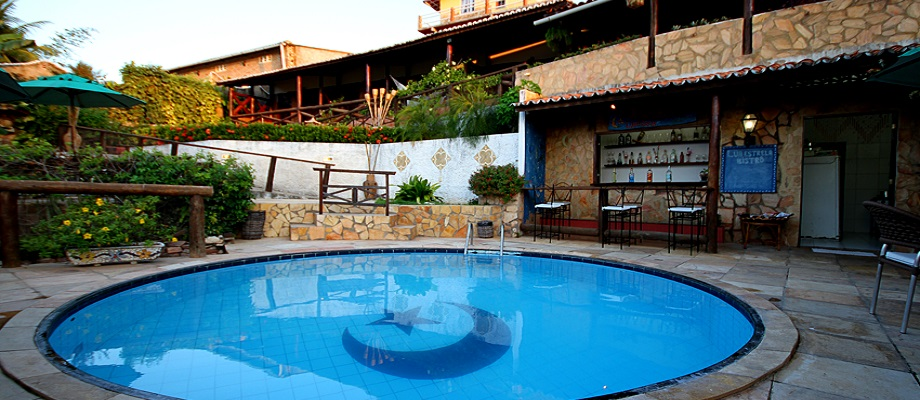
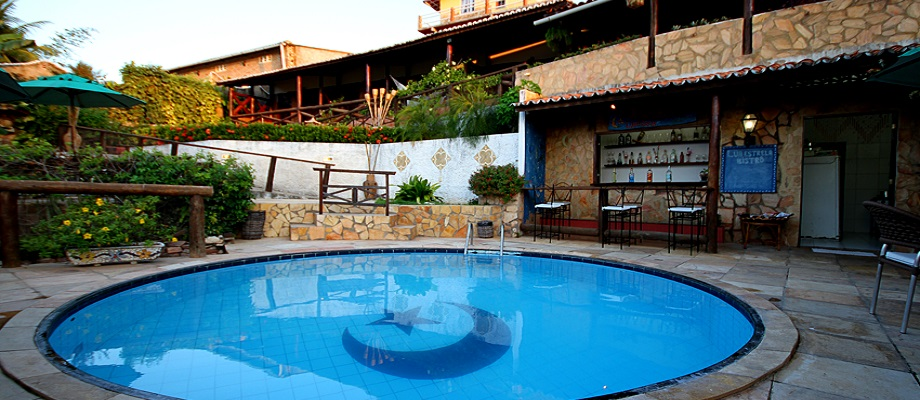

Bem-Vindo ao site da pousada Lua Estrela
A Pousada Lua Estrela, tem a cara e o espírito de Canoa Quebrada, unindo conforto e comodidade à natureza e alegria do local. Venha nos conhecer e sentir a diferença!

São 11 aptos. com banheiros privativos, chuveiro elétrico, ventilador de teto, frigobar, tv a cabo, varanda com rede, sendo 5 aptos. com vista para o mar.

Restaurante agradável, onde é servido o farto café da manhã (incluso na diária) sistema self-service, com opções de sucos, pães, frutas e delícias que só aqui se encontra. Tudo isso com direito a uma linda vista do mar ao som de músicas New Age.

A pousada Lua Estrela oferece:
• Sala de tv com imagem e som digitais e todos os canais da Direct Tv.
• Estacionamento com segurança.
• Piscina com cascata e serviço de bar, onde você só se preocupa em relaxar e aproveitar nossos drink’s e aperitivos.